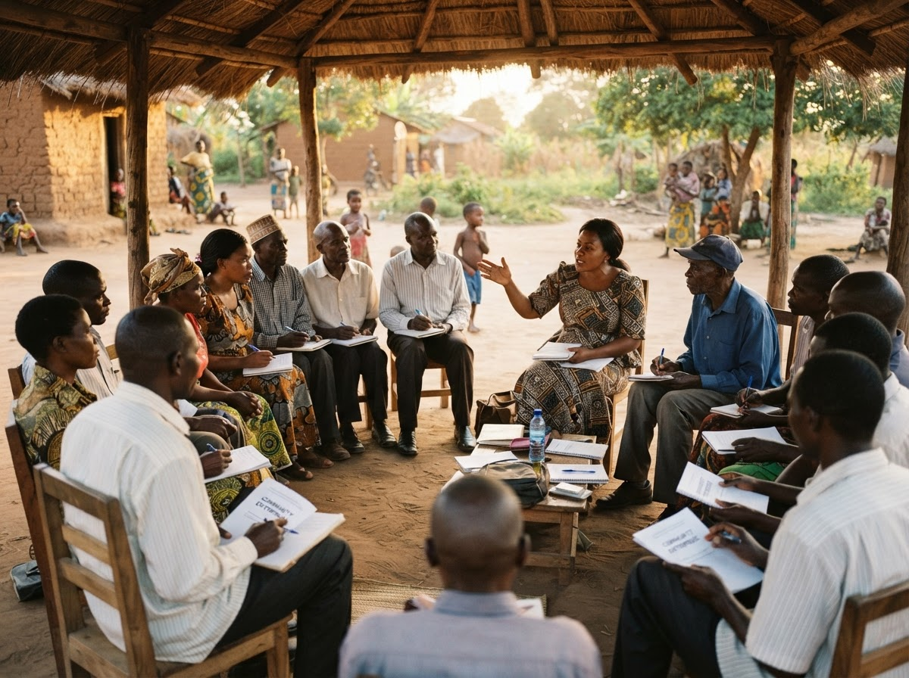

A decade of teaching sustainable practice to the people who actually run the continent's enterprises — traders, manufacturers, cooperative chairs and chief executives.

Our HistoryASBS Africa began in 2016 as a series of weekend clinics for traders and small manufacturers who kept being told to "go green" without anyone explaining what it would cost them.
Those first sessions set the method we still use: start from the business as it actually operates, work out what a sustainable version looks like on a real balance sheet, and only then talk about frameworks.
We train African entrepreneurs and business leaders to run enterprises that are durable — environmentally, socially and commercially. Every programme ends with something a participant can act on that month.
Faculty are practitioners first. Our case material is African, our cohorts are small enough for real conversation, and our teaching is judged on what changes in the business afterwards.
Today that means partner universities in every African region, so that the thinking taught here is simply how business is taught. We measure progress in enterprises still trading and still improving three years out — not in seats filled.
Entrepreneurs and leaders trained
Partner institutions across Africa
Countries with active cohorts
Alumni reporting measurable impact
Faculty and directors are practitioners first — bankers, economists and operators who still work in the sectors they teach.